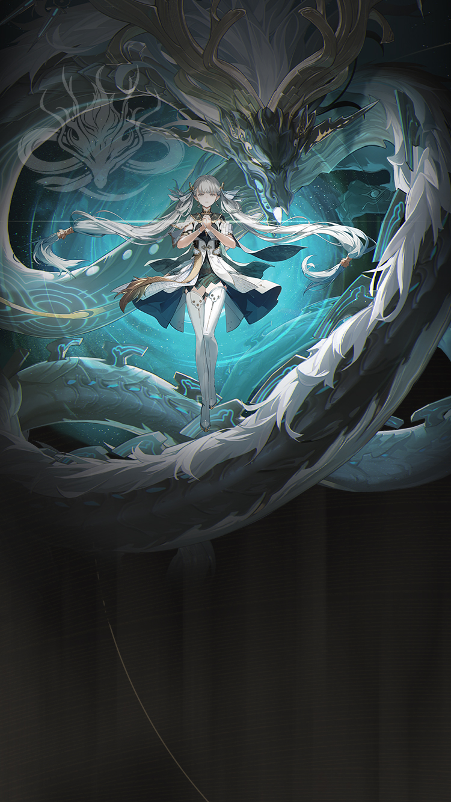

WaveKit
WaveKit

Wuthering Waves Resonator guide
Jinhsi build, teams, weapons, and Echoes
Burst carry that wants helpers who enable her damage window.
Skill priority
Team compositions
 MDPSJinhsi
MDPSJinhsi HelperZhezhi
HelperZhezhi SupportShorekeeper
MDPSJinhsi
SupportShorekeeper
MDPSJinhsi HelperYinlinSupportShorekeeper
MDPSJinhsi
HelperYinlinSupportShorekeeper
MDPSJinhsi HelperMortefi
HelperMortefi SupportVerina
SupportVerina
Jinhsi guide overview
Jinhsi is a Spectro main dps in Wuthering Waves. This WaveKit guide focuses on the practical build choices most players need first: weapon options, Sonata and Echo setup, stat priority, simple rotation notes, and team shells that make sense for real accounts.
Quick build
- Role
- Main DPS
- Team type
- Spectro Burst
- Best weapon
- Ages of Harvest
- Alternate weapons
- Verdant Summit / Lustrous Razor / Autumntrace
- Sonata
- Celestial Light
- Echo cost
- 4-3-3-1-1
- Main Echo
- Jué
- Main stats
- CRIT Rate or CRIT DMG / Spectro DMG / ATK%
Stat priority
- CRIT Rate / CRIT DMG balance
- Spectro DMG or ATK%
- ATK% or HP% if the kit scales that way
- Energy Regen only if the rotation needs it
Team direction
Jinhsi wants coordinated or skill-friendly helpers to feed her burst window.
Useful teammates
Simple play pattern
- Set up both teammates before giving Jinhsi the main damage window.
- Use the listed Sonata and main Echo as the first build target, then improve substats slowly.
- If the team feels stressful, use the helper to choose a real healer or safer third slot.
Build priority
- Difficulty
- Moderate
- Safety
- Bring a healer if learning
- Data note
- Guide checked
Jinhsi can work well, but build priority depends heavily on your owned teammates and weapons.
Jinhsi FAQ
What is the best Jinhsi build in Wuthering Waves?
Jinhsi's recommended WaveKit setup is Burst DPS Build, using Ages of Harvest, Celestial Light, and Jué as the main Echo target.
What stats should Jinhsi use?
Start with CRIT Rate or CRIT DMG / Spectro DMG / ATK%. If the rotation feels uncomfortable, improve Energy Regen or defensive comfort before chasing perfect substats.
What teams work with Jinhsi?
A strong reference shell is Jinhsi / Zhezhi / Shorekeeper. WaveKit can also suggest owned alternatives through the team helper.
Is Jinhsi beginner friendly?
Jinhsi's current difficulty is listed as Moderate. If you are learning, pair them with safer sustain or defensive support.